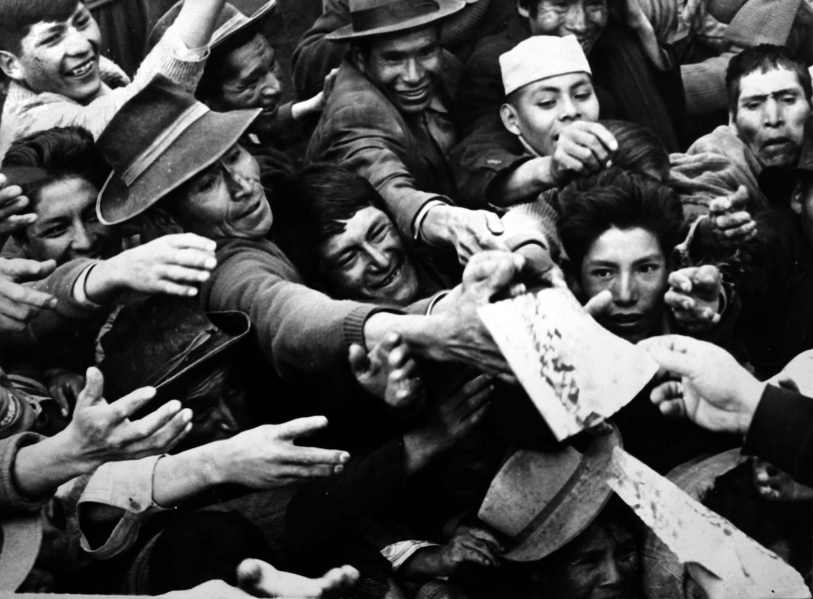
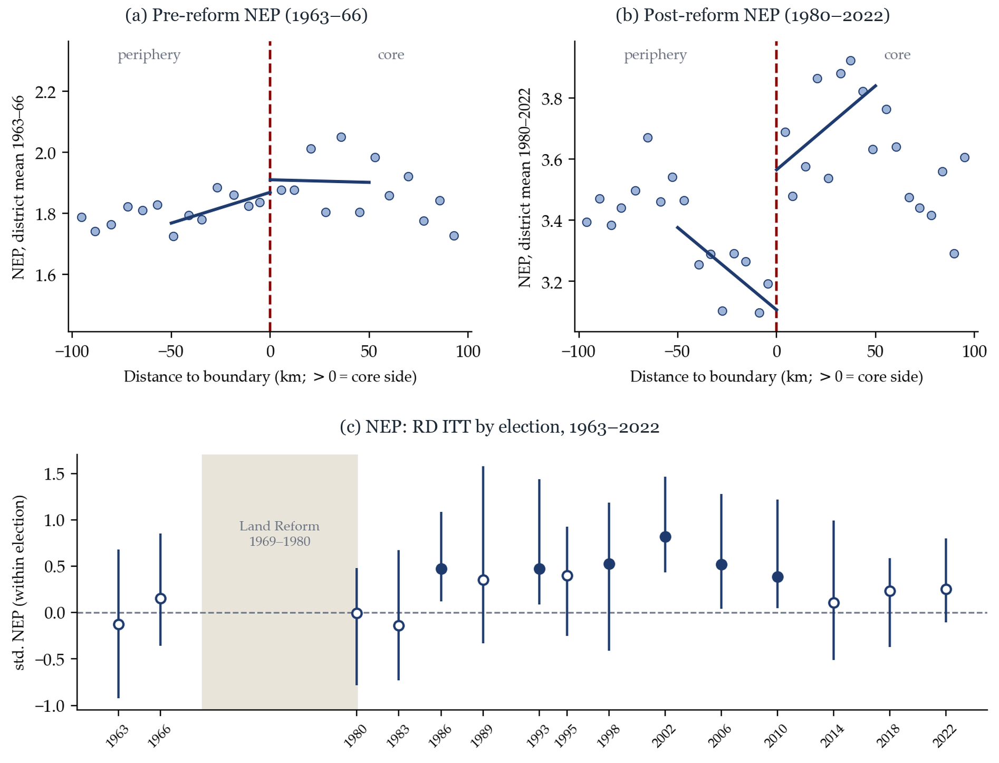
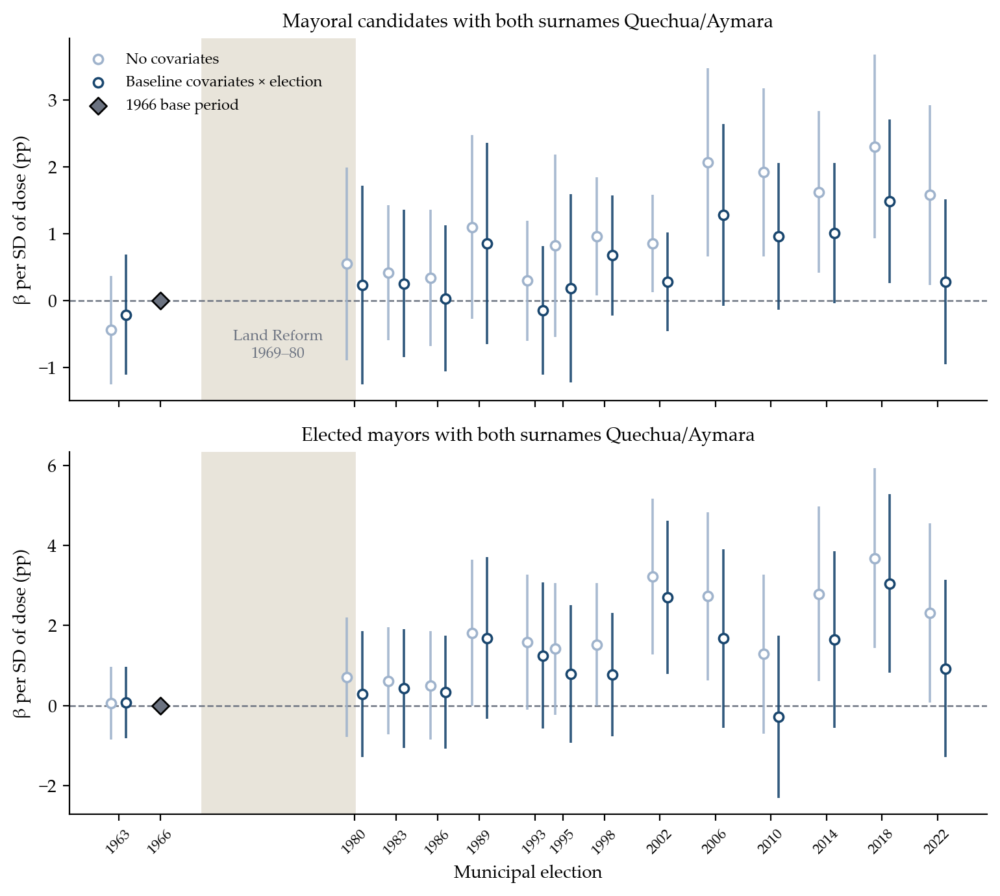
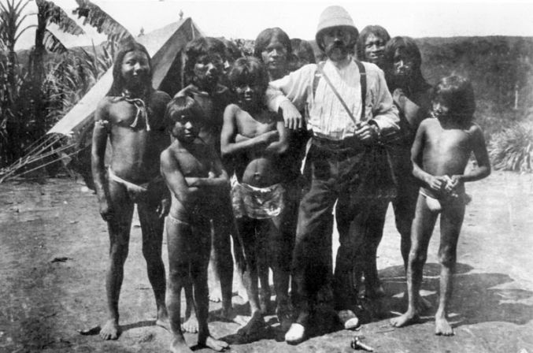

Can redistribution reshape political power? This study examines the large-scale land expropriation carried out under military rule in Peru between 1969 and 1980 and its long-run effects on local politics after the return to democracy. Identification exploits a unique design feature: the reform was administered through Agrarian Reform Zones (ARZ) and regional offices within each ARZ, conceived and drawn up for entirely different purposes a decade prior to its roll-out. I combine district-level variation in exposure driven by proximity to ARZ offices, discontinuities at within-ARZ administrative borders, and district-by-election variation to estimate the causal effects of the reform on political competition and candidate selection. I show that the reform persistently increased local political competition, raising the number of parties contesting local elections. To interpret these findings, I extend a model in which landlords' labor-market power translates into electoral control. By introducing land expropriation and endogenous party entry, redistribution weakens elites' coercive capacity and encourages political entry. Consistent with strategic responses to increased competition, I show that post-reform elections feature more educated and higher participation of previously excluded indigenous candidates. Evidence on reduced elite capture, greater peasant-based organization, and shifts in voters' support toward redistribution aligns with this interpretation.
JEL: P16, N46, Q15, D72

Jesús Ruiz Durand, untitled · Reforma Agraria Peruana series, ca. 1968–1972 · Museo Reina Sofía

Political competition at the ARZ core boundary, and RD effects by election, 1963–2022

Indigenous political entry: elected first, candidates late
Martín Chambi, Fiesta en Hacienda Angostura, Cusco, 1929Abstract
Can landed elites prevent mass education? If so, under what conditions? This article examines the long-term human capital impacts of the Spanish hacienda, the predominant system of agrarian estates with coerced labor granted to local elites during the colonial era in Latin America. Using original district-level data on the placement of haciendas in Peru since 1876 and over a century of population census records, we exploit variation in hacienda crop-suitable areas, age cohorts, and predetermined elite family connections to show that hacienda prevalence persistently reduced literacy rates throughout the 20th century. Consistent with a supply-side mechanism, exposed districts received lower investments in schools and teachers, without comparable reductions in other public goods, and exhibited negligible impacts on demand-side proxies such as local economic activity, agricultural specialization, or broader development outcomes. Moving beyond explanations centered on early market integration or public-goods provision, we show that a larger share of workers in haciendas explains long-term human capital losses even among regions with comparable structural conditions. This effect was strongest where labor control was concentrated in fewer haciendas, allowing landed elites to block schooling investments. Because voting required Spanish literacy, limited schooling in exposed areas translated into persistently lower Indigenous political participation. Although industrialization, urbanization, and top-down land redistribution later emerged, they failed to reverse the human capital deficits entrenched by the hacienda system.
with Daniel Araujo, Humberto Laudares, Dafne Murillo and Felipe Valencia Caicedo · working paper

Robuchon, explorer hired by rubber baron Arana, with Uitoto people in the Putumayo · from Imaginario e imágenes de la época del cauchoAbstract
Can a brief period of economic prosperity leave a legacy of long-term adversity? This study examines the lasting impact of the Amazon rubber boom around 1900 on contemporary income, inequality, Indigenous presence, and forest conservation. Identification combines variation in historical rubber distribution with an instrumental variable strategy using FAO-based rubber suitability and a Regression Discontinuity design around concession boundaries. Municipalities with greater rubber presence experienced short-term gains in 1920 but long-run reversals by 2010, showing lower income, population density, and higher inequality and Indigenous extinction. Grid-level analyses across the Amazon further show that historical rubber suitability is associated with weaker economic activity and population today, alongside greater deforestation. The findings, consistent across Brazil, Colombia, Peru, and Bolivia, indicate that the rubber boom's short-lived wealth reinforced extractive institutions and violence against Indigenous peoples, leaving long-lasting economic, social, and environmental scars across the Amazon.